It's Tokens All The Way Down
How RLMs are Different
What an RLM is,
and why it's different.
A Recursive Language Model:
- treats context as an object it can manipulate in a symbolic environment
- delegates to sub-LMs as functions inside that REPL
- is bitter lesson pilled; lets the model decide how to work

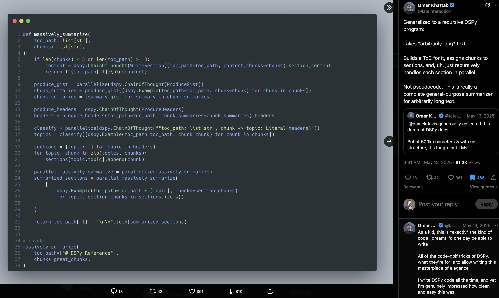
Omar Khattab, May 2025 — a general-purpose summarizer for arbitrarily long text as a recursive DSPy program. The RLM idea, in ~40 lines.
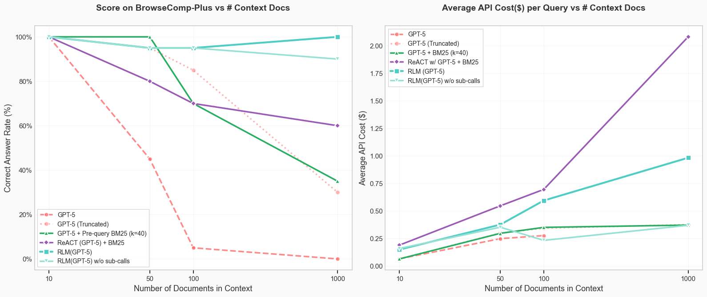
On BrowseComp-Plus, RLM(GPT-5) stays near 100% out to 1000 docs while flat, truncation, RAG, and ReAct all decay — at a fraction of ReAct's cost.
You define the task,
the model picks the path.
With agents and tool-calling, you are subject to limits of the context window.
With an RLM the model decides how to navigate the context — peek, grep, chunk, recurse — inside the REPL.
The deterministic shell is yours. The open-ended, judgment-heavy middle is the model's job.
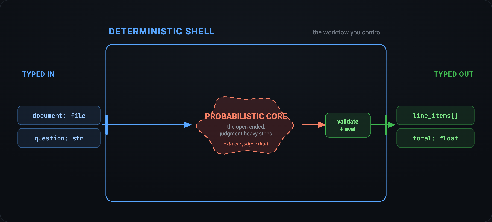
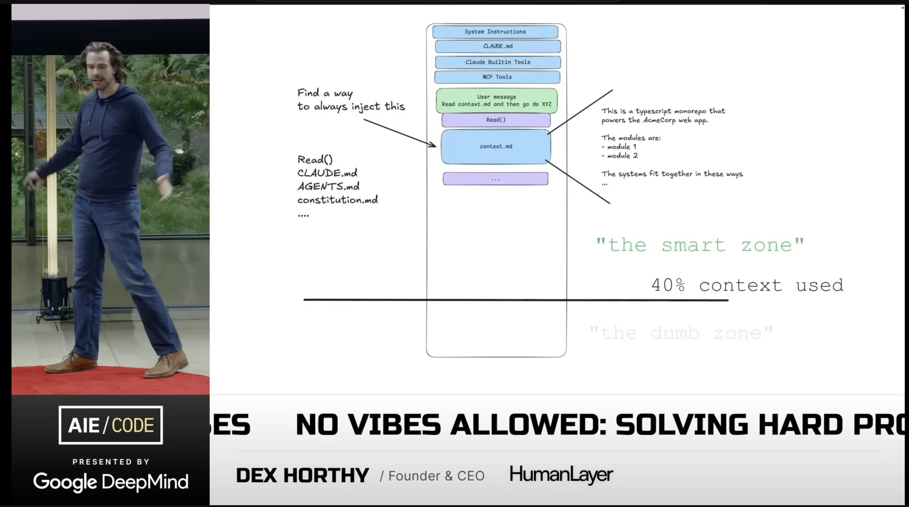
Meaningfully different from tool-calling;
context is part of the environment.
| Approach | How it treats context |
|---|---|
| RAG | Retrieves top‑k passages for a single query. |
| Agents | Decompose task — pollute root context with every sub-result. |
| CodeAct | Runs code as a tool, not as the environment itself. |
| RLM | The code is the environment; recursion is the primitive. |
The first three stuff the context window. An RLM keeps the context as a variable in the environment — the root LM never "sees" the bulk; it orchestrates via code.
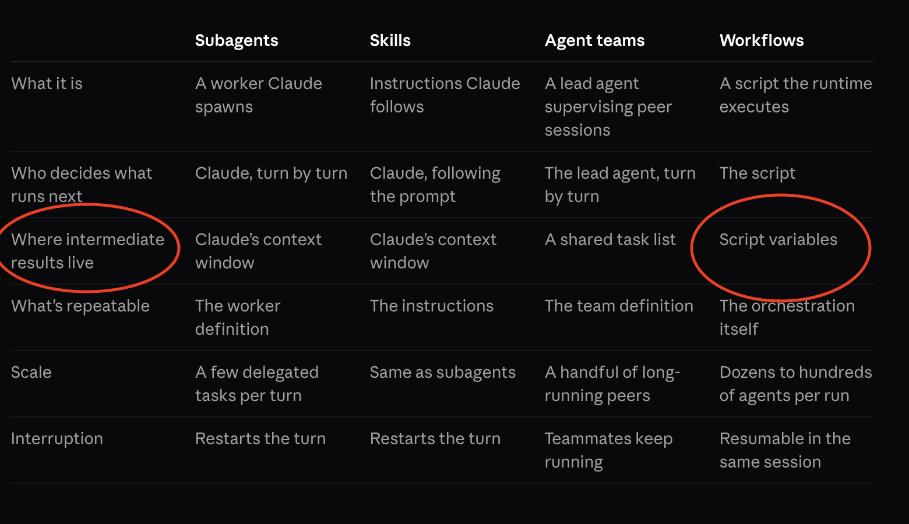
Only workflows keep intermediate results in script variables — state that outlives any one context window. Sounds familiar!
When to reach
for it.
Rule of thumb.
Use an RLM when the context won't fit or the work is compositional — and you can spend latency to buy reliability.
Otherwise a single call, RAG, or a plain code tool is cheaper and just as good.
When to use
- Very large/ dense inputs or outputs
- Tasks amenable to decomposition
- Long-horizon sessionsthat would rot a flat context
- Fits in context
- Low-latency requirements
- ~Weak base coder
LongCoT Performance
@raw_works stress-tested long-horizon reasoning using claude-sonnet-4-5 vanilla vs dspy.RLM
Across 500 questions (logic, CS, chemistry, chess, and math):
RLM lifted accuracy from 2.6% → 45.4%
RLM wins where dependencies compile to code — puzzles, Hanoi, chess. It stalls on graph-shaped problems (max-flow, Hindley–Milner) and graphs.
Source: raw.works/longcot-a-benchmark-worthy-of-a-rlms-attention
| Metric | Vanilla | RLM |
|---|---|---|
| Correct | 13/500 | 227/500 |
| Accuracy | 2.6% | 45.4% |
| Captured cost | $31 | $621 |
| Task | Vanilla | RLM |
|---|---|---|
| Logic puzzlesHanoi · Sudoku · Dungeon · +3 | 0/15 | 15/15 |
| Chess | 0/100 | 85/100 |
| BlocksWorld · Sokoban | 0/20 | 16/20 |
| Chemistry | 13/100 | 31/100 |
| Math | 0/95 | 6/95 |
| MaxFlow · Hindley–Milnergraph-shaped — both fail | 0/75 | 0/75 |
Sum 12 numbers
buried in 30k tokens.
Same root model (gpt-5.4-mini), same question. flat dumps the whole blob into one prompt; RLM loads it as a sandbox variable and counts in code.
flat 0/1 correct · RLM 1/1 — RLM trades 1.4× wall-clock for a 15× smaller prompt, 5× fewer tokens, and the right answer.
Five questions
over a 5k-row table.
Joins, group-bys, churn math. flat flattens df.to_string() into the prompt (truncated); RLM reads only a preview, then runs real pandas in the sandbox.
The honest trade: RLM is slower per question, but the only arm that actually computes over the data — flat truncates and guesses.
A coding agent gets it right too.
For 40–115× the overhead.
Same two tasks, same grading. agent = Claude Code — its own frontier model, its own shell, not dspy.RLM at all. Not iso-model with flat/rlm: this answers "what does buying a general-purpose agent cost instead of building the scaffold," not "which scaffold wins."
Accuracy tied: agent 100% / 75% vs rlm 100% / 75% on tasks A/B — a real shell beats flat regardless of scaffold. The gap is pure overhead: Claude Code's own system prompt, tool schema, and full-file reads dominate every call. Building the scaffold is ~50× cheaper than buying general-purpose agent overhead, per query.
In practice.
RLMs in the real world
dspy.RLM — the core module in DSPy. Typed signatures, pluggable sandbox.
ax (github.com/ax-llm/ax) — open source reference agent with DSPy, full workflow and orchestration.
predict-rlm (Trampoline AI) — production runtime on DSPy. Multimodal, skills, file I/O, full traces.
fast-rlm (avbiswas) — minimal; the whole thing in an afternoon.
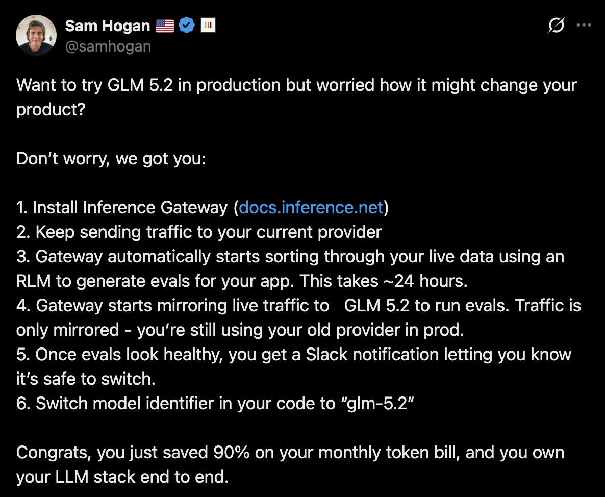
Exploring a dataframe
The whole integration is a DSPy signature — analyst brief in the docstring, typed inputs, typed outputs.
Pass the DataFrames in, call dspy.RLM(). No agent scaffold, no custom tools, no hand-built orchestration.
The model interacts with the data through REPL code. That's the entire program you write.
class CohortRetentionAnalysis(dspy.Signature): """You are a data analyst investigating why user retention is dropping. You have access to three DataFrames: - users: user profiles with signup dates and acquisition channels - events: feature usage events with timestamps - subscriptions: subscription status, plan, MRR, and cancellation reasons Investigate the data step by step. Compute retention by cohort, segment by acquisition channel, compare feature usage between retained and churned users, and identify the root cause of churn. """ users: DataFrame = dspy.InputField(desc="User profiles with signup_date, acquisition_channel, country") events: DataFrame = dspy.InputField(desc="Feature usage events with user_id, event_type, timestamp") subscriptions: DataFrame = dspy.InputField(desc="Subscription records with status, plan, mrr, cancellation_reason") overall_churn_rate: float = dspy.OutputField(desc="Overall churn rate as a decimal (e.g. 0.25 for 25%)") worst_channel: str = dspy.OutputField(desc="Acquisition channel with highest churn rate") key_finding: str = dspy.OutputField(desc="The main insight about what differentiates churned users") recommendations: str = dspy.OutputField(desc="2-3 actionable recommendations based on the analysis") dspy.RLM(CohortRetentionAnalysis)(users=..., events=..., subscriptions=...)
dspy.RLM — exploring a dataframe
Three DataFrames, 16MB / 250k events. Only previews hit the prompt — the model writes and runs the analysis in the sandbox.
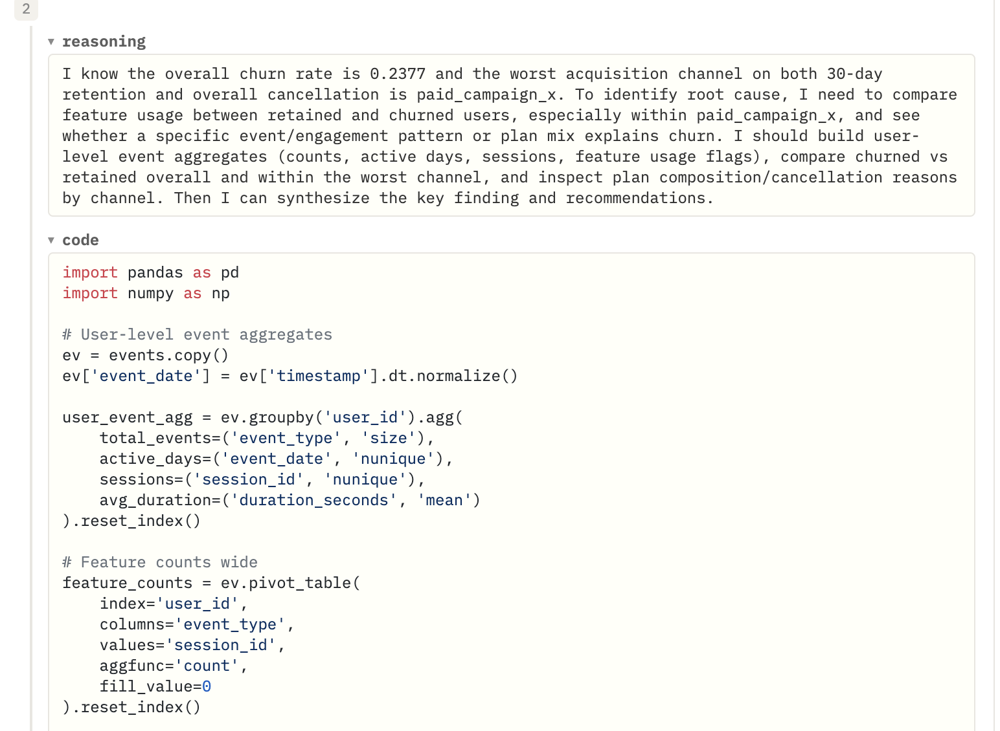
One step of the run, verbatim — the model's reasoning, then the pandas it wrote to build user-level aggregates and feature pivots. No scaffold; it planned this itself.
Real world use case:
Invoice to inventory
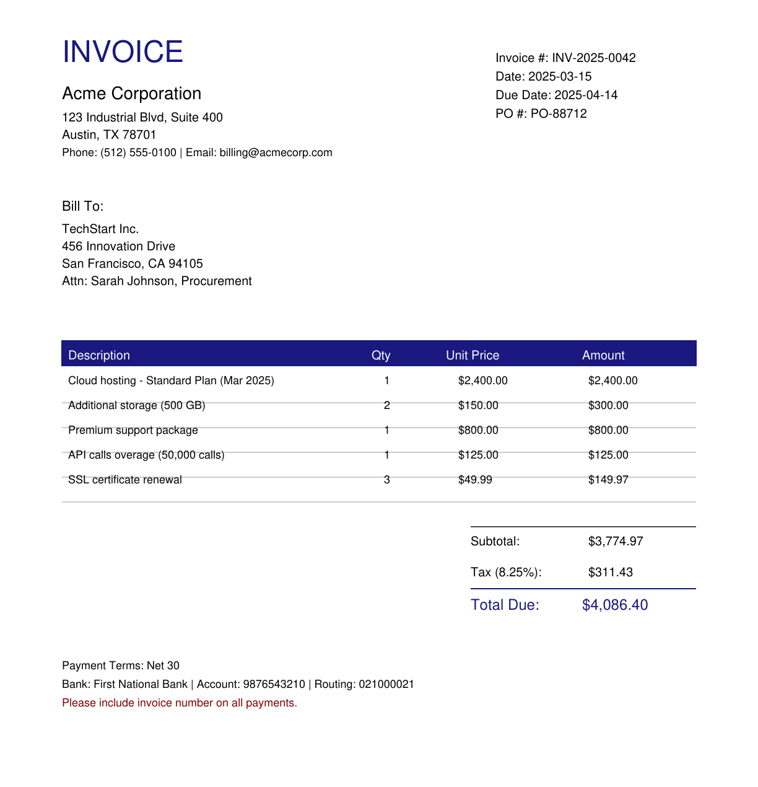
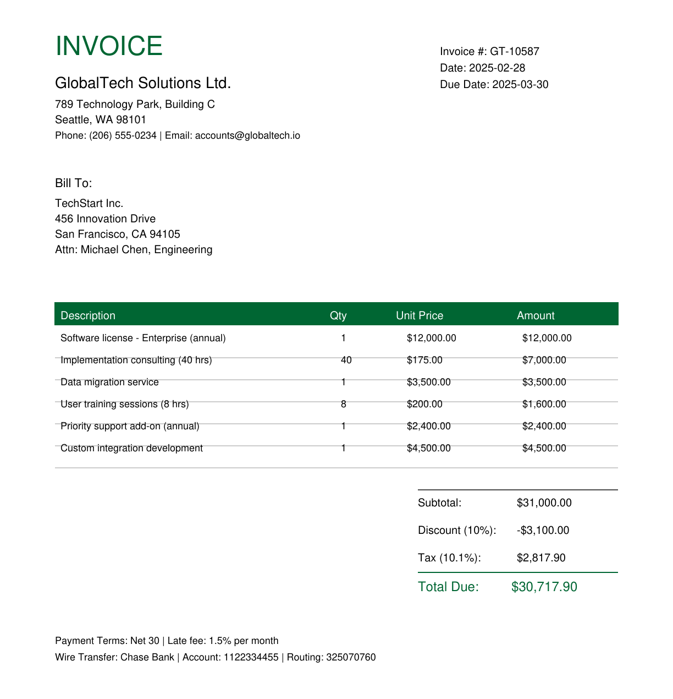
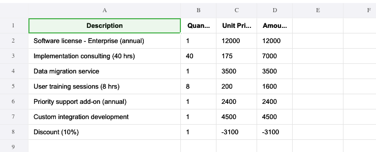
Two PDFs → one typed .xlsx — line items lifted straight off the page, one sheet per vendor plus a reconciled Summary. predict-rlm/examples/invoice_processing
Focus on abstractions instead of context engineerning.
from predict_rlm import PredictRLM, File from predict_rlm.skills import pdf, spreadsheet rlm = PredictRLM(ProcessInvoices, skills=[pdf, spreadsheet], sub_lm="openai/gpt-5.1") await rlm.acall(invoices=[File("acme.pdf"), File("globaltech.pdf")])
One DSPy signature → typed InvoiceExtractionResult + an .xlsx workbook. No agent scaffold. Orchestrator gpt-5.4 drives the REPL; gpt-5.1 reads the page images.
pymupdf.open(p) # 2 files · 2 pages # vendors: Acme Corp, GlobalTech
await asyncio.gather(*[ predict("page: dspy.Image -> invoice", page=img) for img in pages]) # parallel, gpt-5.1
# GlobalTech: subtotal+tax != total # 33817.9 vs 30717.9 → reconciled wb.save("invoice_extraction.xlsx")
5 REPL iterations · 60s · $0.12 ($0.06/page)
predict-rlm enforces signatures between sub-lm calls
Every recursive call crosses a typed boundary. The orchestrator can't pass prose to a sub-LM — it passes a signature.
DSPy enforces structure at the seam: the sub-LM's reply is parsed into a Pydantic model and retried on a schema miss before it returns.
The REPL gets back a real Python object — .total, .line_items — not a string to re-parse.
inv = await predict( "page: dspy.Image -> invoice: InvoiceModel", page=render(pdf))
IN page : dspy.Image OUT invoice : InvoiceModel vendor_name : str total : float line_items : list[LineItem]
inv.total # 4086.4 (float) inv.line_items[0]# LineItem(...)
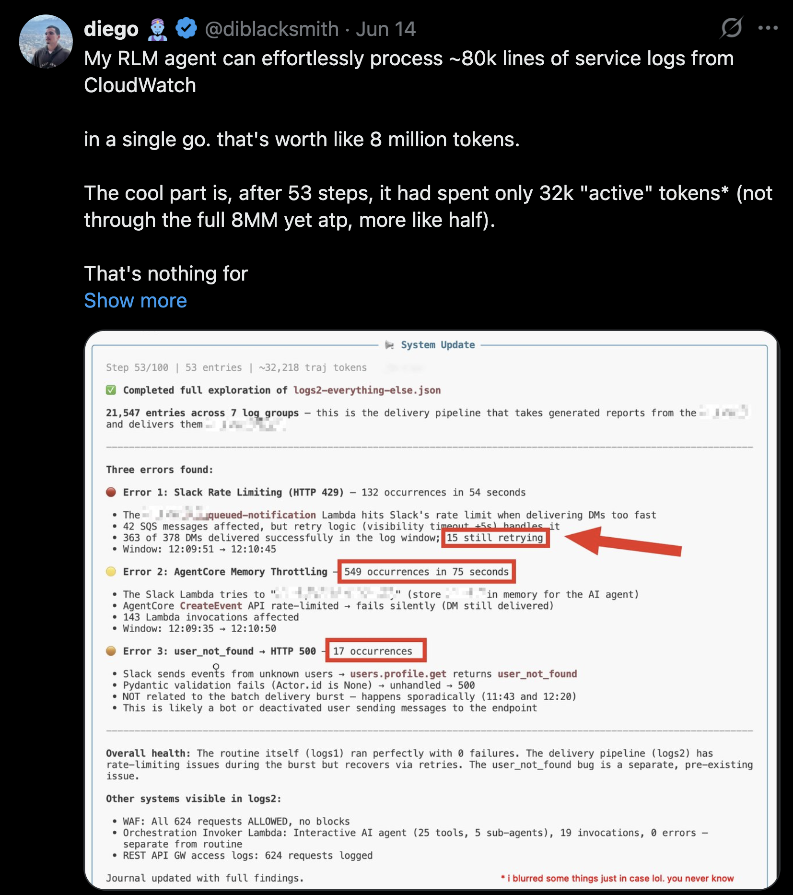
8M tokens of CloudWatch logs, ~32k active after 53 steps — the model paged through the context instead of holding it all at once.
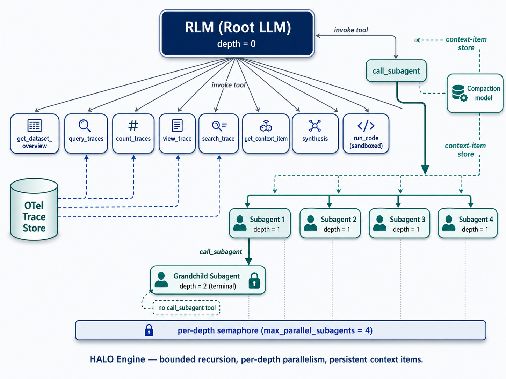
HALO (context-labs/halo) — a recursive-LM engine over OpenTelemetry traces: the root LM navigates the trace store through tools, spawns bounded per-depth-parallel subagents, and compacts findings into persistent context items.
Scanning a codebase
for $0.87
Pointed dspy.RLM at OWASP's Damn Vulnerable Serverless App — no prompt engineering, no custom scanner logic, just a signature.
It decomposed the tree itself, delegated file-level reads to a cheap sub-LM, and synthesized findings back up and caught 6 of 10 planted vulns.
Missed dynamic ones: auth bypass, DoS via billing abuse, TOCTOU race conditions, vulnerable dependencies.
Write-up: kmad.ai/Recursive-Language-Models-Security-Audit
import dspy import os from typing import Any # LM Setup - must have OPENROUTER_API_KEY set lm = dspy.LM("openrouter/moonshotai/kimi-k2.5", max_tokens=16000) lm_mini = dspy.LM("openrouter/moonshotai/kimi-k2.5", max_tokens=16000) dspy.configure(lm=lm) # DSPy Signature & Program class CodeScanner(dspy.Signature): """ Review the provided application source code in detail. Focus specifically on identifying security vulnerabilities, insecure coding patterns, and other areas of concern. """ source_tree: dict[str, Any] = dspy.InputField() documentation: str = dspy.OutputField(description="Generated markdown documentation.") def load_source_tree(root_dir: str) -> dict[str, Any]: """Recursively load the folder into a nested dict.""" tree: dict[str, Any] = {} for entry in os.listdir(root_dir): path = os.path.join(root_dir, entry) if os.path.isdir(path): tree[entry] = load_source_tree(path) else: with open(path, "r", encoding="utf-8", errors="ignore") as f: tree[entry] = f.read() return tree source_root = "~/dev/DVSA/" source_tree = load_source_tree(source_root) del source_tree['CONTENT'] # Remove the 'lessons' we will compare against. code_scanner = dspy.RLM(CodeScanner, max_iterations=35, sub_lm=lm_mini, verbose=True) # Load and run result = code_scanner(source_tree=source_tree)
What it caught,
lesson by lesson.
| Lesson | Topic | Status | Notes |
|---|---|---|---|
| #1 | Event Injection | Partial | Caught S3 command injection; missed node-serialize code injection |
| #2 | Broken Authentication | Missed | JWT bypass & open billing API not documented |
| #3 | Sensitive Info Disclosure | Caught | Admin receipt access via S3 |
| #4 | Insecure Cloud Config | Caught | S3 public write & command injection |
| #5 | Broken Access Control | Partial | Caught IDOR/privilege escalation; missed payment bypass |
| #6 | Denial of Service | Missed | Billing concurrency abuse not mentioned |
| #7 | Over-Privileged Functions | Caught | Comprehensive IAM policy violations |
| #8 | Logic Vulnerabilities | Missed | Race condition/TOCTOU not documented |
| #9 | Vulnerable Dependencies | Missed | node-serialize, node-jose, shell-quote not mentioned |
| #10 | Unhandled Exceptions | Partial | Generic error disclosure noted; specific examples missed |
3 caught · 3 partial · 4 missed — every miss was runtime behavior static reading can't see.